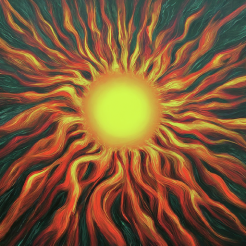
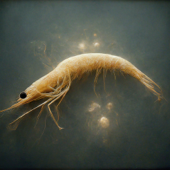
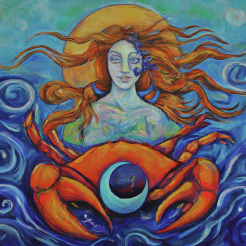
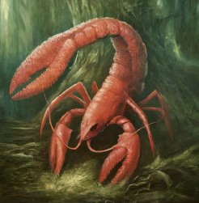
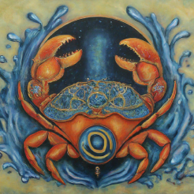
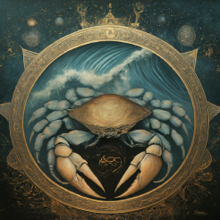
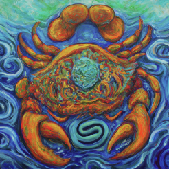
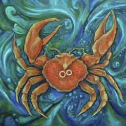
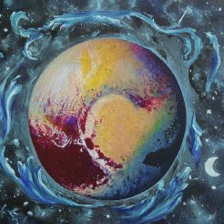
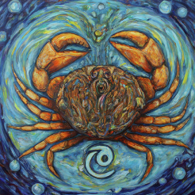

*Hover to see who has these Cancer Placements*
People with Sun in Cancer are known for their emotional depth and nurturing qualities. They value home and family.

The Moon in Cancer signifies a strong connection to emotions and intuition. Individuals often seek comfort in familiarity.

Mercury in Cancer reflects a thoughtful and sensitive communication style. These individuals often express their feelings deeply.

Individuals with Venus in Cancer are loving and protective in relationships, valuing emotional security.

Mars in Cancer indicates a protective and nurturing approach to action. These individuals are motivated by their loved ones.

Jupiter in Cancer encourages growth through family and home experiences. These individuals are generous and protective.

Individuals with Saturn in Cancer often seek to create a solid foundation for their emotional world and family life.

Uranus in Cancer brings innovative ideas related to home and family. These individuals may approach traditions differently.

Individuals with Neptune in Cancer have a dreamy and imaginative approach to family and emotional connections.

Pluto in Cancer signifies deep emotional transformation and the importance of nurturing connections in life.

Those with Cancer Rising often appear nurturing and intuitive. They have a deep connection to home and family.
